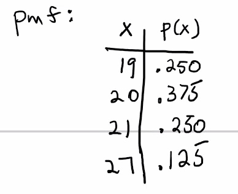
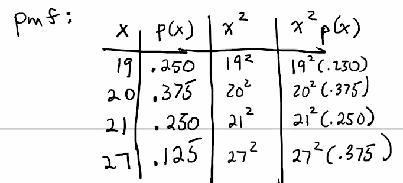
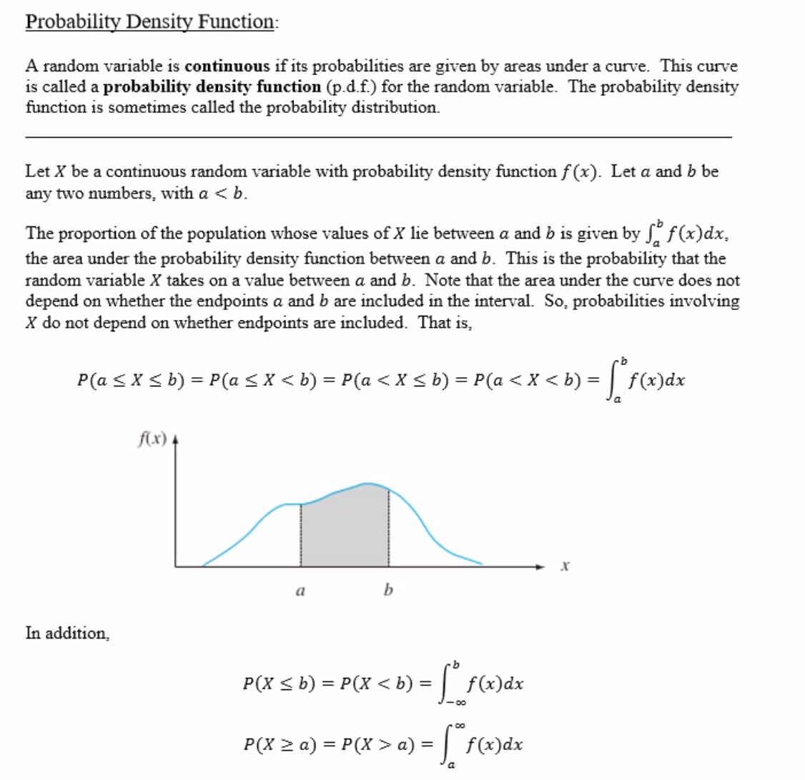
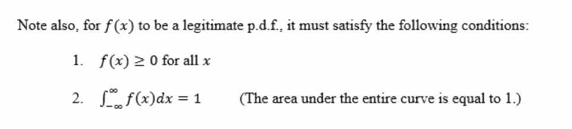
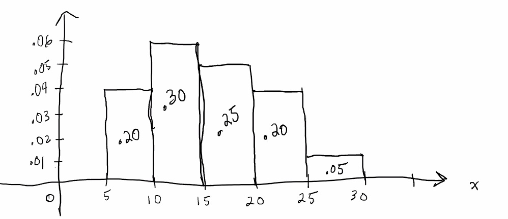
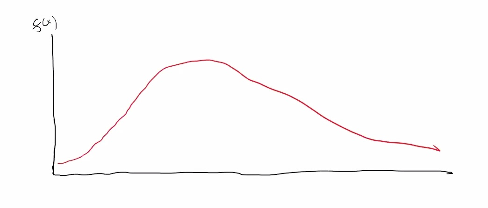
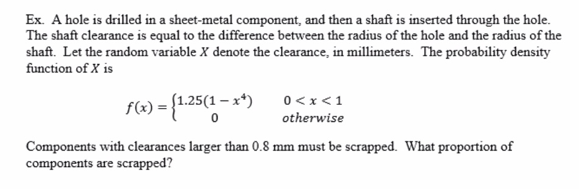
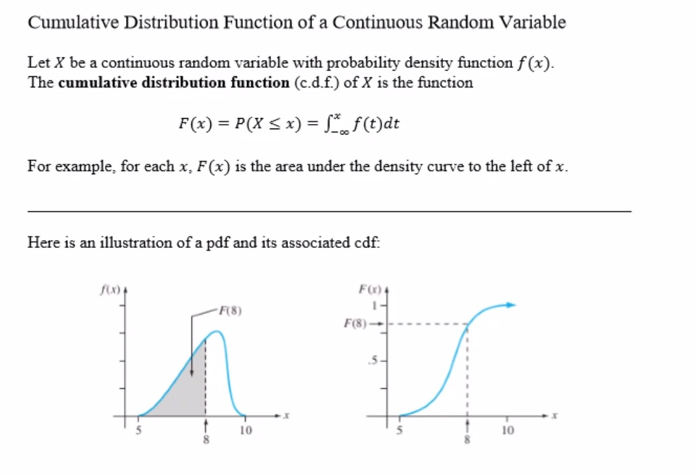

Using the previous example, lets use the computing formula.
Recall the ages of 8 students:
19, 20, 20, 19, 21, 27, 20, 21
where:

Find the variance using the alternate computing formula:

Where adding the last column together will give the sum
Stat50 2.4 pdf for continuous RV.pdf

Always find the probability that

Some background: In a probability histogram, areas of rectangles correspond to probabilities. For example with a sample of continuous data, data can be organized into categories, or bins.

The areas of these rectangles correspond to probabilities and let us know the proportion of values of
The probability histogram for a large continuous population could be drawn with extremely narrow rectangles and might look like this curve:


We are looking for
Stat50 2.4 cdf for continuous RV.pdf
